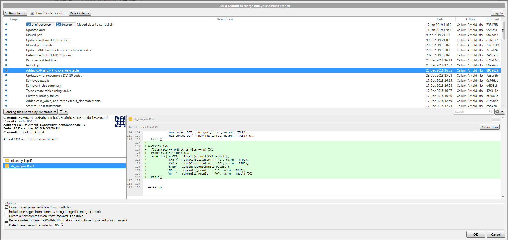

![]()
Welcome, and what this book is about
This book’s focus is on how to produce reproducible research, and should serve as an introduction to data management and project organisation. Through the course of this document, we explain techniques that can be employed easily to help add structure to your research projects and reduce the time spent poring over code to determine if your code really does produce the table and figures you have in your manuscript or poster. Not only does this aid you, but it is essential if the project moves between people. We also hope that the structures we suggest will help you find documents and files more easily.
You can find the bookdown version of this blog post here
Whilst there are many tools that we can use to ensure our projects and code are tidy and result in reproducible work, some of these may not possible to implement given the potential requirements for administrative privileges during set up. As such, we have divided this book into multiple sections, progressively getting more involved as the book continues. Whilst you may be able to utilise these more sophisticated tools, the core of reproducible research remains the same, so the first chapters still apply.
We start by explaining what reproducible research is, why we need it, and how the data we receive can be integrated into a reproducible research workflow. Next, we suggest ways in which you can structure projects to assist this workflow. We end by discussing how to create a Jupyter Notebook and produce the output documents, allowing you to integrate your code and results in a dynamic document.
We hope that you enjoy the content and feel like you come away having learnt something useful, and that this book can serve as a reference document for your future research. If you have any questions that cannot be answered within the book, or you would like to contribute and improve this document, please contact us.
This document would not be possible without the contributions of Stephanie Hughes from Public Health Ontario, so thank you Steph!
The basics for all
This chapter focuses on what everyone can and should be doing. The guidelines here do not require anything to be downloaded, so can be implemented immediately and easily. If you follow the principles laid out here, you are well on your way to making reproducible research.
Reproducible work - an introduction
Before we can discuss how we should structure our projects and manage our data, we need to first talk about reproducible research.
What is reproducible work?
At its core, reproducible research is about being transparent in how to produce the results you report. In doing so, this allows anyone with your data and code to reproduce the work you have produced. This includes you, as there will be many times you need to check results, and a reproducible workflow will allow you to spot mistakes easily, and give you confidence that the code and data you use give the reported outcome every time they are run.
Reproducible research:
- Contains relevant code, including which packages were used, and which programming language was used
- Contains enough text, either via markdown or comments, to be able to understand the purpose of the code chunks and code document
- Ideally integrates code and results, along with text, into a single document (literate programming!)
- Applying good data quality control techniques to ensure that projects are self-contained so that all files and everything necessary to produce the output documents are easily accessible and accounted for
Why is it important?
Simply put, mistakes happen. If your project is structured properly, you will have a code document that contains all of the relevant information, and it is easy to recreate the outcomes. Importantly, you will also have the necessary input files (and tracking of all their changes) stored within the project folder. That way, if you move computers, delete a document by accident, or hand over the project to another person, everything is neatly contained and can be reproduced without hassle.
How do I make reproducible work?
There are many different ways to make reproducible work. The information listed here should give you the foundations upon which you can build your own systems. However, the principles are the same and largely revolve around project structures, and dynamic documents that contain both the code and the results embedded in them. This way, updates to the code will automatically update results (including tables and figures), and you don’t need to worry about incorrectly copying the wrong version, or even retyping numbers in a table
In addition, a version control system like Git can prove to be an invaluable tool in making reproducible research. It is essential tracked changes for everything you do in a project: all the changes in your code, which files you produce, where you move files, the results your create … and the list goes on. We will talk through the basics of Git towards the end of this book, but if you would like a more in depth tutorial, you should read this fantastic resource by Jenny Bryan and co. It is aimed at R users, but much of it is generalizable. More resources are available at the end of the document.
Structuring a project
The first step in creating reproducible research is creating self-contained projects. Everything that goes in to, and comes out of, the project, should be contained within a single folder (directory). I would recommend that you create a folder called repos/ that your project folders live in, e.g. C:/User/owner/Documents/repos/proj/. This way your project folders are neatly separated from other files. Whilst we will discuss version control with Git later, I would suggest that you also routinely back up your project folder to separate drives (cloud and/or external hard drives), using a 3-2-1 system.
Now you have set up your repos/ folder, it is time to create the project folder. This is the structure that I find works for me. You may want to find a variation on it that works for you, but the basic premise of keeping repositories self-contained should remain.
C:/
└── Documents/
└── repos/
└── proj/
├── data/
├── docs/
├── figs/
├── funs/
├── out/
├── cleaning.R
└── analysis.RAs you can see, the project repository contains separate directories that you can use to store different file types. Importantly, the analysis and cleaning files are stored in the project root, allowing easy use of relative paths over explicit paths e.g. read_csv(here('data', 'data_file.csv')) rather than read_csv('C:/Users/owner/Documents/Repos/my_project/data/data_file.csv'). The reason why relative paths are preferable is that they allow projects to be used by multiple people without the need to re-write code. If you use explicit paths and change computer, or the project is opened by another person, the code will break as they will not have the same directory structure as the computer that the code was created on.
Note: the example above used an R package called
here_here, calling the functionhere(). Similar solutions may exist for other languages, and you should try and find them for the language of your choice.
data/
An important idea is that you should treat your data as read-only. You and your team have likely worked hard to collect the data and it’s easy to make a changes along the way that you either forget about, or need to reverse. As most projects span a long time between the data collection and analysis stages, if that happens to you it will take a lot of work to figure out exactly which changes you are interested in reversing etc. To save yourself this hassle, and help make your work reproducible, once the data is collected it should not be edited; all the work should happen in your code, allowing it to be easily checked.
If you are following good data practices and treating your data as read-only, all your cleaning will happen within your code (create a cleaning file in your project e.g. proj-cleaning.R). However, if you do need to edit the files manually (and I strongly recommend against it as it makes it harder to reproduce as there isn’t a good way to track exactly what changes were made), you should create a save a new (separate) copy of the dataset (using file naming conventions) in your project directory (e.g. H:/repos/proj/2019-01-24_data-file.csv). Additionally, you should create a word document where you can list the changes you made with each new file. When we get to the section on Git, you will see how we can set it up to track all the changes within a project folder (including the create/deletion/movement of files!) so we don’t have to remember what changes we make. This means we can just have one copy of each document, and track the changes through time.
Other subdirectories
docs/: this contains the output documents. For example, if you are using R Markdown to create a pdf via LaTeX, you could place them here.funs/: this contains the functions you write and might want to reference. The idea is to create functions so that can give code a meaningful name. It also helps if you need to repeat a code chunk multiple times, especially if you need to edit it at some point, as you can just call the function rather than typing it out each time.out/: this contains files that are produced from the original data e.g. cleaned data files. You can then call them in your analysis scripts.figs/: this contains figures that may be generated from your scripts.
Importantly, if you follow the principle that your data/ files are read-only, all of the files in these directories (with the exception of funs/) should be reproducible and could be deleted at any time without concern of generating them again. In order to revert to previous figures and output versions, you will need to be able to track changes in your code. This is where a version control system like Git comes in, which we will discuss at the end.
How to name files and directories
How you name files and directories may not seem like an important point, but it can cause quite a headache if you try and use code to automate processes, and at best, it just slows things down. To quote Aaron Quinlan, a bioinformatician, “a space in a filename is a space in one’s soul”.
Instead try and use something like this:
- KISS (Keep It Simple Stupid): use simple and consistent file names
- It needs to be machine readable
- It needs to be human readable
- It needs to order well in a directory
- No special characters and no spaces!
- Use YYYY-MM-DD date format
- Use
-to delimit words and_to delimit sections- i.e.
2019-01-19_my-data.csv
- i.e.
- Left-pad numbers
- i.e.
01_my-data.csvvs1_my-data.csv - If you don’t, file orders get messed up when you get to double-digits
- i.e.
Key Points
- Use a version control system such as Git to track changes in your code.
- Data isn’t touched one collected:
- Do all data munging within your program i.e. no editing the excel spreadsheets!!!
- You should have multiple backups on at least two different sets of servers/drives
- Your outputs should be reproducible from the code you have:
- Make sure this is the case by routinely clearing your programming environment and re-running the code in a clean environment to ensure your results aren’t contingent on ‘hidden’ packages/modules that were loaded erroneously
- Never set explicit file paths (e.g.
setwd()) if you can avoid it- Try and use a package that allows you to set relative paths e.g.
here_herein R. This allows the project to be passed to someone else in its entirety and the code won’t break because they don’t have the same folder names and set up as you (also if you work on multiple computers/OS)
- Try and use a package that allows you to set relative paths e.g.
- Format your filenames properly
Notebooks
There are many different types of notebooks, but we will only explore Jupyter notebooks. The reason why we won’t look at other options is because Jupyter notebooks are very well established and have numerous kernels available that allow for the use of many different statistical and programming languages.
Note: if you are using R, you should be using RStudio in combination with R Notebooks or Rmd files (or using
#'in your.Rscripts to insert markdown comments), which are far more suited to R than Jupyter is.
But first, what is a notebook, and why should we use them?
A notebook is a way of producing documents that mix plain text and code, which was one of the key goals at the beginning of this guide! Whilst they are not perfect (though read this to see some rebuttals), and should not be used for doing heavy coding and scripting, they are excellent for data exploration and producing output documents. You just need to be careful to run all the code in a fresh environment often enough to ensure you don’t have any hidden packages/modules loaded in the background that aren’t part of your code.
Jupyter notebooks
This section will give you a brief overview of what a Jupyter notebook is and how to use them, but if you would like a more detailed understanding, please read the official documentation. Jupyter Labs has now been released as a newer version of notebooks, giving you a full IDE (integrated development environment) and more control over the notebooks and working environment. This guide will not explore these features, as we are more interested in how to use the notebook.
Note: throughout this section you can substitute the phrase “Jupyter notebooks” with “Jupyter Labs” if you would prefer to have a full IDE allowing you more control over the system.
Jupyter notebooks are run on Python, though additional things can be downloaded to allow you to use your programming language of choice. For an example of what you can do with Jupyter notebooks, click here, and here for a collection of neat and applied notebooks.
Installing Jupyter notebooks
Mac’s come shipped with a version of Python, but it is most likely outdated, and it doesn’t contain everything we want. In order to get running, I strongly recommend downloading the Anaconda distribution over other distributions, or even just directly from Python’s website. The instructions below will be enough to get you up and running with Jupyter notebooks in your language of choice.
- Download the full Anaconda distribution i.e. not miniconda
- Be sure to choose
Python 3.x, notPython 2.x, as it’s the newer version and is forwards-compatible. - Be sure to only install for one user, not the whole system
- Be sure to select
Add Anaconda to my PATH environment variableunder Advanced Options - Be sure to install Anaconda to the drive where your data lives. To do this you will need to manually edit the installation path within the Anaconda installer wizard, otherwise it will automatically end up in the
C:\drive
- Be sure to choose
- Use
kernelsto connect your programming language of choice with python and the notebook
Kernels
A kernel is program that allows the notebook to connect with, and run, your code. Jupyter comes with the Python code pre-installed, but if you want to use a different language, you will need to download a specific kernel.
Below, the installation instructions are described for common languages used in epidemiology. To see a full list of kernels available for Jupyter, along with the appropriate documentation and installation instructions, follow this link.
Installing the Stata kernel
The instructions for installing the stata_kernel are based from the original documentation here. It should work with Stata 12 (I have tested it). If these instructions do not work for you, it may be that there has been an update to the kernel, at which point, please refer to the original documentation linked above.
Open a command prompt (Windows) / terminal (linux/mac) and type/copy-paste the following commands, pressing enter after each line
pip install stata_kernelpython -m stata_kernel.install
Windows-specific steps
In order to let stata_kernel talk to Stata, you need to link the Stata Automation library:
- In the installation directory (most likely
C:\Program Files (x86)\Stata12or similar), right-click on the Stata executable, for example,StataSE.exe(this will just show asStataSE, but is listed as an application). ChooseCreate Shortcut. Placing it on the Desktop is fine. - Right-click on the newly created
Shortcut to StataSE.exe, chooseProperties, and append/Registerto the end of the Target field. So if the target is currently"C:\Program Files\Stata12\StataSE.exe", change it to"C:\Program Files\Stata12\StataSE.exe" /Register(note the space before/). Click OK. - Right-click on the updated
Shortcut to StataSE.exe; choose Run as administrator.
Installing the SAS kernel
*This has not yet been tested here. The instructions for installing the sas_kernel are based from the original documentation here*
Open a command prompt (Windows) / terminal (linux/mac) and type/copy-paste the following commands, pressing enter after each line. First we need to install a dependency called saspy that helps the kernel connect SAS to python
pip install saspypip install sas_kernel
You should now see something like this.
Available kernels:
python3 /home/sas/anaconda3/lib/python3.5/site-packages/ipykernel/resources
sas /home/sas/.local/share/jupyter/kernels/sasNow verify that the SAS Executable is correct
- find the
sascfg.pyfile – it is currently located in the install location (see above)[install location]/site-packages/saspy/sascfg.py. To querypipfor the location of the file, typepip show saspy. Failing that, this command will search the OS for the file location:find / -name sascfg.py - edit the file with the correct path the SAS executable and include any options you wish it include in the SAS invocation. See examples in this file
Connecting R with Jupyter
If you are hoping to make nice documents and reproducible work using R, I would highly recommend that you use the R Markdown or R Notebook through RStudio application instead. However, if you would prefer Jupyter, then please read on.
It is possible to download an R kernel, much like for Stata and SAS, but it can be a bit fickle, so a different approach is described below. It is important to note that with this method you are installing a fresh version of R, so you will not have access to the packages you have previously installed - you will need to reinstall them in this R environment, which could be done within a Jupyter notebook.
Open a command prompt (Windows) / terminal (Linux/Mac) and enter the following commands:
conda install r-essentials r-igraphRscript -e 'install.packages("languageserver")'
If you would rather install an R kernel than a fresh install of R within the Anaconda distribution, you can follow the instructions here. The advantage of this is that it allows the notebook to access previously installed packages as they are not running off a fresh version of R.
Using Jupyter notebooks
Now you have set up Jupyter to run with the programming language of your choice, we should start using it. How you do that is detailed in this section.
Creating a notebook
You can either open up the Anaconda navigator and then Jupyter notebooks, or open Jupyter notebooks directly. Once open, navigate to the directory you would like to create the notebook in (If you are using a version control system like Git, then you should be within the project’s repository)
Select the New button in the top right corner, and then select the language you would like to program in (this assumes that you have downloaded an appropriate kernel if you would like to use a language other than Python)
Running a Jupyter notebook
Now you have the notebook open in your chosen language, it’s time to start doing some data exploration and analysis. Here, we’ll cover some basic commands that will get you started, but to fully leverage the power of the notebook, you should read the Jupyter documentation, along with the documentation of your preferred kernel, particularly sections relating to magic commands (which are language-specific).
When you are writing in a cell (‘Edit’ mode), you can use these commands:
| Keyboard shortcut | |
|---|---|
Shift + Enter |
Executes the current cell and enters you into the next one |
Ctrl/Cmd + Enter |
Executes the current cell, but does not enter you into the next one |
Esc |
This exits ‘Edit’ mode without executing the cells |
Tab |
Code completion or indent |
If you are not in ‘Edit’ mode (‘Command’ mode), and therefore at least one cell is selected, you can use these commands:
| Keyboard shortcut | |
|---|---|
Ctrl/Cmd + a |
Add an empty cell above your current cell |
Ctrl/Cmd + b |
Add an empty cell below your current cell |
dd |
Delete the selected cell |
Ctrl/Cmd + m |
Change the cell type to ‘Markdown’ so you can add text |
Ctrl/Cmd + y |
Change the cell type to ‘Code’ so you can add code |
Enter |
Enter ‘Edit’ mode |
Customizing Jupyter notebook’s UI
The following section is not essential and can be ignored if you want to keep things as simple as possible.
Because I do not like the In[] Out[] text showing in documents, along with centering plots/figures, I have customized the Jupyter notebook settings. If you would like to do the same, this section should help you. It is not necessary, but I feel that it gives cleaner documents (including pdf documents via LaTeX). If you do this, it is essential that you routinely restart the kernel to run everything again in a fresh environment as it is incredibly easy to run code blocks out of order and forget how this changes the output and introduces hidden packages.
If you would like to customize the look of the notebook, jupyterthemes is a great package that can be installed. I have also edited the custom.css file (C:\Users\owner\.jupyter\custom\), adding display: None; under the section
div.prompt,
.prompt {so that it now reads
div.prompt,
.prompt {
font-family: monospace, monospace;
font-size: 9pt !important;
font-weight: normal;
display: None;
.
.
.
}This removes the In[] Out[] text. To centre the output of tables/figures, add
.output_png {
display: table-cell;
text-align: center;
vertical-align: middle;
}to the custom.css file, right after the .prompt {..} section.
To enable soft wrapping in the notebook, you need to edit the notebook.json file (C:\Users\owner\.jupyter\nbconfig\). If it does not exist, you need to create it. Once open, add
{
"MarkdownCell": {
"cm_config": {
"lineWrapping": true
}
},
"CodeCell": {
"cm_config": {
"lineWrapping": true
}
}
}before restarting Jupyter.
Output documents
We’ve covered a lot of information up until now about setting up your projects and your code, but a big part of reproducible research is the creation of nice-looking and transparent documents. The reason we’ve gone to such effort to install Jupyter notebooks and connect them with our language of choice is that not only do they allow for excellent data exploration, but they also make documents that look professional.
In scientific articles, whilst it’s not essential, LaTeX is a nice touch, and Jupyter can give you a LaTeX formatted pdf documents. To do this, you will first need to install LaTeX. If you are on Windows, I would recommend the MiKTeX distribution, and if you use a Mac, then I would recommend the MacTeX distribution. You will also need the “swiss-army knife” of file conversion, pandoc. Pandoc is not needed for creating LaTeX-formatted pdfs, but if you have documents with unsupported characters and you need to use a different pdf-engine you’ll need to use pandoc.
During the installation process, LaTeX should have been added automatically to the PATH. To test this, enter pdflatex into a command line/terminal. If you get the output This is pdfTeX ... then you are good to go. If not, please add the executable to the PATH. In Windows you do this by navigating to Environment Variables from the Windows key and editing the PATH in User Variables. In Mac, you should open the terminal and enter touch ~/.bash_profile; open ~/.bash_profile, which opens (or creates if missing) the file that stores your PATH. From here, type export PATH="path-to-latex-executable:$PATH" to add the executable to the path. Now save and exit the text editor, run source ~/.bash_profile in your terminal, and you’re good to go. The executable location can be found by opening the MiKTeX/MacTeX console and looking at the bin directory under settings. For me, on a Windows computer where I don’t have administrator privileges it reads C:\Users\owner\AppData\Local\Programs\MiKTeX 2.9\miktex/bin/x64. If you are still having issues, please consult this document.
Now you’re ready to create a LaTeX-formatted pdf document. All you need to do is click File -> Download as -> PDF via LaTeX (.pdf).
Unfortunately, when creating pdf documents, code is not hard wrapped. This means that if you have a very long line of code (> 80 characters), it will run out of the formatted area, and at worst, off the page. At present, I do not know a way to force Jupyter notebooks to wrap the output automatically, so instead you have to write clean code and start new lines using , and \n if it’s too long.
If you would rather not produce a pdf via LaTeX, instead wanting an arguably more readable output, you could create an html file. This is done in the same manner as pdf documents.
Git
As mentioned, a version control system is an integral part of any reproducible research project. Think of it as tracked changes for your code. When working on a project, even if you’re the only one coding, it’s important to be able to go back to previous versions if you make a mistake and can’t remember all the steps you went through since your last stable version. Git isn’t the only VCS available, but it’s the most prevalent, and has a good support community, so is what will be the focus in this book.
Set up
There are many ways to get Git running on your computer. Depending on your OS and the version you have, Git may come pre-installed on your computer. However, it is a good idea to update it to the latest version, so I’d recommend you follow the steps below anyway.
Windows
- Install Git for Windows
- This gives you Git Bash, which is a much nicer way of interfacing with Git than the command line.
- Note: when asked about “Adjusting your PATH environment”, be sure to select “Git from the command line and also from 3rd-party software”. The other default options should be fine. For more details about the installation settings, please click here
- Open up Git Bash and enter
where git. Open up the command line and enterwhere git. Depending on whether you have administrator privileges, the outputs should look something like this, respectivelywhich git:/mingw64/bin/gitwhere git:C:\Users\owner\AppData\Local\Programs\git\bin\git.exe(User privileges)where git:C:\Program Files\git\bin\git.exe(administrator privileges)
- If you see
cmdinstead ofbin, then you need to edit the PATH in your environment variables, as above. You can do this by typingenvironment variablesinto the Start box and scrolling to the PATH section of User/System variables (depending on whether you have administrator privileges), and changingcmdtobinin thegit.exepath.
Mac
There are more (workable) ways to install Git on OSX than on Windows, but I think this is the best option as it gives you a great package manager for the future.
- Open the terminal and enter
/usr/bin/ruby -e "$(curl -fsSL https:/raw.githubusercontent.com/Homebrew/install/master/install)" - Enter
brew install gitinto the terminal
Final Git set up steps
Now that you have Git running, you need to tell it who you are. This allows multiple people to make changes to code, and the correct names will be attached to the changes.
Open up the Git Bash and enter
git config --global user.name 'Firstname Lastname'
git config --global user.email 'my_email@gmail.com'Typing in git config --global --list is a way to check that your details have been saved correctly.
Note: it is essential that you enter the same email as your GitHub account information. This way you can connect the two. If you would prefer to use a different user name than your GitHub user name you can. This would help show you which computer you completed the work on, but it is not important to most people.
Installation problems
If you followed the instructions above, Git should be ready to go. However, sometimes you still end up with errors. This is far more likely with Windows that Mac, but if you find that the next steps don’t work for you, see if the other installation options from Jenny Bryan’s book here work for you, or the trouble shooting tips here (and here if you’re on Windows), which are useful when trying to connect Git with RStudio.
Git client
Now you have Git installed, there are a number of ways to use it. The easiest way is to use a client, which allows you to use buttons instead of typing code. They also provide a visual for more complicated ideas, such as branching, greatly simplifying the process. I prefer to use the GitKraken client, and they’re associated GloBoards for project To-Do’s, but you can use others. SourceTree is another good alternative, but I have had some issues connecting to some GitHub accounts, so I have since moved away from it.
Remote repositories
It is not essential, but one of the best things about Git is that online repositories create an easier way to sync your work between computers and colleagues, avoiding much of the mess caused when this work happens simultaneously / your file sharing system of choice isn’t syncing properly. In this section, I will explain the correct way to utilize this, and the other way …
GitHub - the Good
GitHub is built for this. You should take full advantage of the effort and troubleshooting that has gone into the platform. Don’t try and recreate the wheel
With GitHub now offering unlimited free private repositories, I would recommend that you set up an account with GitHub. The reason why I suggest GitHub over a different purpose-built platform (such as Bitbucket or GitLab) is the community. Previously, I would have recommended Bitbucket due to the unlimited free private repositories, but this is no longer a restriction with GitHub. With GitHub, if you ever want to make your code open-source, you immediately have access to the largest community of programmers who can help you improve your code, as well as putting it to good use. And isn’t that why we do research?
Now that you’ve decided to use GitHub, it’s very easy to register. Just click the link above and select the package you’d like. If you have an academic email address, consider making this your primary email address on the account, as it gives you a PRO account unlimited collaborators on private repositories, unlike the standard account that limits it to 3 collaborators.
Be sure to choose a user name that is easy to remember, and easy to find. I would suggest just using your name.
Now you have a GitHub account set up, this is your remote. If you work on a project with collaborators, this can be shared with them. That way, collaborators can work on their own versions of the code on their local machine (computer), and when it’s ready for other people to use/help write, they can push it to the remote where others can access it. Don’t worry if you don’t know what push is - we’ll cover that soon.
Private server
It is possible to use and get the benefits of Git without a purpose-made online repository such as GitHub, but it’s not as simple and it’s not as stable. Because services like Dropbox and OneDrive are not built for storing and tracking changes in code and dot files, it can go wrong, especially when more than one author is involved. Of all the file syncing systems, Dropbox seems to be the best option due to the git-remote-dropbox extension, but this is still inferior to GitHub etc. With these home-made systems, corruption of the project repository is a matter of “when”, not “if”. If you insist on using this option, go read the git basic commands first, come back, and read on …
Dropbox - the Bad
git-remote-dropbox
Install the git-remote-dropbox extension. The instructions were copied from the documentation and *have not been tested*.
- Install the helper with
pip install git-remote-dropbox. - Generate an OAuth 2 token by going to the app console, creating a Dropbox API app with “Full Dropbox” access (or “App folder” access if you prefer, if you’re not going to be using Dropbox’s sharing features to use git-remote-dropbox in a multi-user setup), and generating an access token for yourself.
- Save your OAuth token in
~/.config/git/git-remote-dropbox.jsonor~/.git-remote-dropbox.json. The file should look something like this:
{
"default": "xxxxxxxx-xxxxxxxxxxxxxxxxxxxxxxxxxxxxxxxxx-xxxxxxxxxxxxxxxxxxxxx"
}- git-remote-dropbox supports using multiple Dropbox accounts. You can create OAuth tokens for different accounts and add them all to the config file, using a user-defined username as the key:
{
"alice": "xxxxxxxx-xxxxxxxxxxxxxxxxxxxxxxxxxxxxxxxxx-xxxxxxxxxxxxxxxxxxxxx",
"ben": "xxxxxxxx-xxxxxxxxxxxxxxxxxxxxxxxxxxxxxxxxx-xxxxxxxxxxxxxxxxxxxxx",
"charlie": "xxxxxxxx-xxxxxxxxxxxxxxxxxxxxxxxxxxxxxxxxx-xxxxxxxxxxxxxxxxxxxxx"
}You can tell git-remote-dropbox to use the token corresponding to username by specifying a URL like
dropbox://username@/path/to/repo.You can also specify the token inline by using a URL like
dropbox://:token@/path/to/repo.
Creating a Dropbox repository
Now you’ve installed the helper extension, you can start using Dropbox for your remote repositories. Unless a project already exists with a Dropbox repository (i.e. you’ve been added to the project and were not the one to set it up), I would recommend that you first create the repositories on your local machine using the steps below.
- Create a project folder on your computer (not in your Dropbox folder), and open up the Git Bash within the folder
- Enter
git initto initialize your folder as a Git repository - Enter
git remote add origin "dropbox:///path/to/repo"
If a repository already exists in a Dropbox folder, and you want to make a local copy, you can do the following:
- Create a project folder on your computer, and open up the Git Bash within the folder
- Enter
git clone "dropbox:///path/to/repo" -b master
You are now set up to use Dropbox as your remote repository and can commit, push, and pull changes using the Git Bash commands:
git add .This stages the changes to your files, and it is essential to do before youcommitgit commit -m "your commit message"git push origin mastergit pull origin master
OneDrive/Google Drive/Network Drive/others - the Ugly
*The instructions for this are based off the following articles and have not been tested*.
https://blog.geekforbrains.com/how-to-use-dropbox-and-git-for-private-repos-e1d304d5ff79
http://autchen.github.io/guides/2016/03/10/git-onedrive.html
http://tony.halcyonlane.com/blog/2011/09/22/Using-git-at-work-on-a-Windows-network-drive//
https://medium.com/@techstreams/git-google-drive-simple-git-host-3a84db4fc1fd
If you want to use a different file syncing system, then you need to create a bare remote repository. This is structured differently than a normal git repository, which makes it slightly better for use as a remote repository … but it’s still a bad idea and can corrupt the project.
- Create/open an existing project folder on your computer (not in your OneDrive folder), and open up the Git Bash within the folder
- Enter
git initto initialize your folder as a Git repository - Assuming you have files already in the directory, you should commit them using
git add --all
git commit -m "your commit message"- Create the bare repo in OneDrive etc using
git init --bare . ~/OneDrive///path/to/repo/project.git
- Configure your remote using
git remote add origin ~/OneDrive///path/to/repo/project.git
push/pullyour commits usinggit push origin master
You can share the OneDrive repository (folder) so that multiple people can work on the project. However, if you do this, it is essential you coordinate your push/pull commands to avoid corrupting the repository.
Creating a repository
If everything has gone well until now, you’re ready to create a project repository. This is where all your code, all your data, all your output files, everything, should live. Whilst you can create a repository directly on your computer, I would advise against this as it causes additional headaches when you want to connect it with GitHub. Instead, create the remote repository first on GitHub.
- Go to www.github.com and click the
+and “New repository”. - Choose a project name
- Decide whether you want it to be a public or private project (choose private if working on sensitive data and research, as you can always convert it to public later)
- Initialize with a README file
Connecting to GitHub
If you are using SourceTree, there are two ways to connect your computer to your GitHub repositories. I would recommend the first option, as it makes cloning repositories (making a copy on your local computer) easier in the future, as you don’t have to go to GitHub each time to find the HTTPS/SSH address. The methods for GitKraken are essentially the same, and SourceTree seems to be slightly more popular, hence why I describe it here.
Method 1
- Go to Tools -> Options -> Authentication in SourceTree and add your GitHub account details
- Leave the preferred protocol at “HTTPS” for the moment, unless you know what you’re doing with SSH keys
- Now open a new tab, click on Remote, and you should see your repositories listed
- Clone the repositories that you’d like to work on
Note: Now SourceTree and GitHub are connected, you shouldn’t have to do the first few steps - just go to step 3.
Method 2
- Go to your repository on GitHub and click on the green “Clone or download” button
- Copy the HTTPS address (your settings should say “Clone with HTTPS” above it, otherwise click “Use HTTPS”)
- Go to SourceTree, open a new tab, and click on “Clone”
- Paste the HTTPS address into the “Source Path / URL:” box
- Click on the “Clone” button at the bottom
Method 3 (not recommended)
If you would like to do it the hard way and use the Git Bash, read the instructions here
Note: if you would like to use SSH keys, read the instructions here
Basic commands
There are many commands that you could learn in Git, but these are the basics, and will be sufficient for pretty much everything you’ll need to do at the moment.
commit: this standings for committing a change to your file in Git. Think of it as saving a document, but instead of saving the whole document as-is, Git saves just the changes since the last version. This makes it very efficient, especially when it comes to backing up your work. Key points:commitoften. By making and saving small changes, your code versions becomes more readable in case you need to go back and find out exactly what and where it went wrong.- Always write helpful messages - keep them succinct, but make sure they describe what the change you made was.
pull: this commands copies the version of the code from your remote to your local machine. Use this when you want to get the most up-to-date version of your code to work on (assuming your local version isn’t the most up-to-date)push: the opposite ofpull. If your local version is the most up-to-date version,pushyour version to the remote.
Branching
Branching is a key part of the Git work-flow. It allows you to make changes to your code, without worrying about breaking previously ‘good’ code. But what is it?
Simply put, when you create another branch you are creating a copy of your code at that point in time. This is useful because it allows you to make changes to your copy, and leave your original code intact! So there’s no concern about breaking your working code while you test out some ideas.

“But isn’t that why we use Git?”
Kind of. But Git is only so powerful. If you have working code, you don’t want to put it out of action whilst you test ideas out, especially if other people need to use your code and can’t wait for you to figure out your future problems. So creating another branch allows you to get around this issue. For most projects, you can get away with just two branches, a master and a develop, which are explained below. If your project is complex, and requires multiple people to work on the code at the same time, it would be worth you looking at implementing this model.
The image to the right is copied from the model listed above. It is useful in illustrating the master and develop approach to branching.
Creating a branch
As with all things in Git, you can do this multiple ways. I prefer to use the client, as I find it far more intuitive when you can see the changes, but you can use the command line or Git bash. If you want to explore the command line code, I would recommend visiting this website, which allows you to interact with the code through illustrations.
When you are in your client (in this case, SourceTree), open the repository you would like to create a branch in. You will notice that there are two buttons called Branch and Merge. If you click on Branch, you will see something like this

Enter the branch name you would like to create into New Branch (I would suggest develop), and hit Create Branch. That’s it. You now have a master and develop branch.
You might notice the tick-box Checkout New Branch. This means SourceTree will execute the command git checkout develop i.e. you will move to the develop branch to continue your work. Now, any changes you make to your code will happen in the develop copy of the code, not in your master branch. Neat. If you want to move back to master branch at some point, you simply right click on the master branch on the left side of SourceTree, and select Checkout master....
Merging a branch
You’ve created a develop branch so you can keep you master pristine and in working condition. But now you’ve made changes you’re happy with, and you want to incorporate them in the main code. To do this, you need to merge the changes from develop into master.
To do this, first you need to checkout the master branch, so you are merging changes into it. Then, click on the Merge button in SourceTree. Select the commit you would like to merge into the master branch (most likely the top one in the develop branch), and click OK. You should have a view like this.

You have now merged your first feature. Whilst the merge feature is particularly useful, it is not the only way of doing this. rebase is another option that works in a slightly different way. It is slightly beyond the scope of this document, but you should read this document and visit this website, as suggested previously, to get experience of putting them both into practice.
Git and Jupyter
Unfortunately, Git and Jupyter don’t always play nicely, so we have to do a few things to try and get around the issues. Due to the way the notebooks create and store the outputs from the code, diffs become unreadable. There are a few ways to get around this. The first option is the simplest, but the others provide a little more control over what you see in the diffs. This is here to serve as an introduction to the tools, but not as a tutorial, so only the links to the documentation have been provided for you to read.
- Clear all outputs before you save and commit the files. That way, Git only tracks changes to the input
- Download the notebook as a markdown file allowing
diffsto be tracked in Git as normal - nbdime
- ReviewNB
- Nextjournal is a promising take on notebooks that simplifies the process of making reproducible research. Currently it is only in beta, and for private research, but if it has a free version when it becomes established it would be a good option allowing a ‘Google Docs’ style of version control.
Additional resources
This document only touches on enough to get you up an running with reproducible work. However, to become fully proficient you will need to delve deeper into the material - trust me, it’ll make your life easier in the long run. Here are a few places to start for each section, many of which were the basis for the systems I implement and advocate for here.
Project structure
https://nicercode.github.io/blog/2013-04-05-projects/
https://tomwallis.info/2014/01/16/setting-up-a-project-directory/
These two resources describe the project structure that I advocate for in a little more detail, with a few minor differences. If you work in
RI would recommend that you follow nicercode’s other suggestions as well, particularly regarding the creation of an R project.
https://medium.freecodecamp.org/why-you-need-python-environments-and-how-to-manage-them-with-conda-85f155f4353c
This takes a deeper look into how to manage
pythonenvironments with anaconda, and how this affects your project structures. This is useful if you are work withpython 2.xandpython 3.x, but also allows your to ensure old code won’t get broken when modules are updated as each module is specific to the environment it is downloaded in.
Git
https://happygitwithr.com/
I cannot emphasise this enough: this is genuinely the best resource I have come across for explaining how to set up and organise a project with
Git. Whilst it is aimed atRusers, there is a large amount of cross-over, so read it regardless of the language you use.
https://medium.freecodecamp.org/how-not-to-be-afraid-of-git-anymore-fe1da7415286
This helps you understand the nuts-and-bolts of
Gitby learning to use the command line, rather than an application like SourceTree.
https://git-scm.com/book/en/v2/
The literal book on Git. Everything from the basics to the advanced.
https://nvie.com/posts/a-successful-git-branching-model/
If you feel comfortable with the idea of branching and are interested in a good extension of what we’ve covered, this will help. Roughly speaking, the more complex you project is and the more people that are involved simultaneously, the more branches you want so you can handle problems as they come up, without breaking previously ‘good’ code.
Reuse
Citation
@online{arnold-leps2019,
author = {Arnold-Leps, Callum},
title = {An {Introduction} to {Reproducible} {Research}},
date = {2019-08-15},
langid = {en}
}